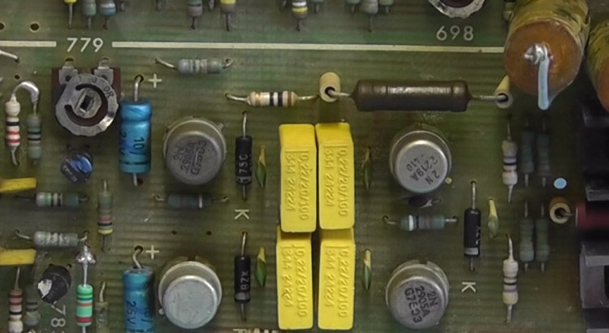

This project is for the hobbyist to design and build a 5 volt precision voltage reference standard that requires no adjustment but still has an accuracy of ±0.01% or better and a temperature coefficient of ±3 ppm/ºC. Also incorporating an auto switch-off and battery monitor feature. PARTS LIST: 1 x Intersil ISL21009BFB850Z, Precision 5V Voltage […]
Month: April 2015
Building a Constant Current Source Box
This project is to build a small Precision Constant Current Source Box which will give a 1mA and 10mA switched output which could be used to check the calibration of a digital multimeter. This project uses the LT3092 programmable two terminal constant current I.C.
DC-DC Boost Converter Test & Review
Review and Test of a cheap DC to DC Boost Converter Module which uses the XLSEMI Integrated Circuit XL6009. Several modules are tested under different input voltage and output load conditions.
Peak Electronic Design Zener Diode Analyzer
New product review of a Zener Diode Analyser designed and manufactured by Peak Electronic Design Ltd. This is a nice little analyser which supports most Zeners, Avalanche diodes and reference diodes from 0V up to 50V. More details from web link below: http://www.peakelec.co.uk/acatalog/zen50-zener-analyser.html

Philips PM5127 Function Generator Repair & Teardown
This is a repair of a Philips PM5127 Function Generator and a teardown of this unit. These frequency generators were manufactured in 1975. They have a frequency range of 0.01Hz to 1MHz with an output variable up to 30 volt peak to peak.
Keithley 225 Current Source Review & Teardown
Review and teardown of a Keithley Instruments model 225 Current Source which dates back to 1976. These units are still very accurate today, with an accuracy of ±0.5%. A range switch and 3 decade switches can provide a current output from 0.1 nanoamps to 100 milliamps.
Sinclair Digital Multimeter PDM35 Teardown (also Micronta)
This is a teardown of a “Micronta” Digital Multimeter which was manufactured by Sinclair Radionics Ltd for Radio Shack (Tandy Corporation) in 1978. Sinclair launched the meter in 1977 and also supplied this meter directly under its own brand name with the model number PDM35 (derived from “Portable Digital Multimeter 3.5 digits). The Sinclair models […]
GPS System with Arduino Mini & OLED Display
Building a simple small portable GPS system which will gave date and time plus Altitude, Number of Satellites detected, Longitude and Latitude. Software Code for this project can be downloaded from the link below: Project source code Parts List: GPS Module (GY-NEO6MV2 ublox) with antenna Arduino Pro Mini Module (Atmega 328 5volt 16mHz) 128×64 OLED […]